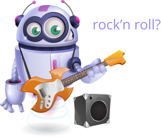

Browser
Bot
How to create a BrowserBot:
Press the
START RECORDING
button
Browse the page with a
use case
(login, register, ...)
Re-open this popup and
create your BOT

START RECORDING
And then?
Was a
test
? A Bot can check it works at each release
Was a
bug
? Share as a video with your team
reload v1.0